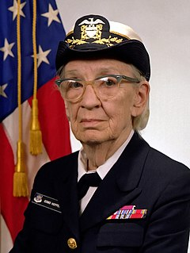

 Grace Hopper was a visionary computer scientist and a trailblazer in the field of programming who forever changed the landscape of modern computing. Born in 1906, she demonstrated a brilliant aptitude for mathematics and earned a Ph.D. from Yale University before embarking on a career that would leave an indelible mark on technology. As a U.S. Navy rear admiral, Hopper’s contributions went beyond the realm of military service; she became a driving force in the development of computer science.
Grace Brewster Hopper was born on December 9, 1906, in New York City, to a family that valued education and intellectual curiosity. From an early age, she exhibited a deep interest in mathematics and problem-solving, a trait that would shape her future in ways that few could have predicted. As a young girl, Hopper loved taking things apart to understand how they worked, a sign of the analytical mind that would later lead her to become one of the most influential figures in the history of computing.
Hopper attended Vassar College, where she earned a Bachelor of Arts degree in mathematics and physics in 1928. Her academic prowess continued at Yale University, where she earned a Master’s degree in mathematics in 1930, followed by a Ph.D. in 1934. At the time, this level of education for women was rare, but Hopper’s determination and brilliance set her apart. Her deep knowledge of mathematics and her growing interest in technology laid the groundwork for her groundbreaking contributions to computer science. She also developed a strong belief in the importance of education, which would remain central to her mission throughout her career.
Grace Hopper’s professional journey began in academia, where she briefly taught mathematics at Vassar. However, her career took a dramatic turn during World War II when she joined the United States Navy in 1943. Hopper, then in her late 30s, enlisted as part of the WAVES (Women Accepted for Volunteer Emergency Service), and was assigned to the Harvard University Computation Laboratory. Here, she worked on the Harvard Mark I, one of the first large-scale electromechanical computers. Hopper’s work on the Mark I introduced her to the world of programming, where she quickly made a name for herself due to her sharp intellect and problem-solving ability. She was responsible for writing detailed code for the machine, which was essential for performing complex calculations. This work was a significant milestone in the development of computer technology and marked the beginning of her pioneering career in computing.
Hopper's influence on the field grew exponentially in the following years. She is perhaps best known for her invention of the compiler, a program that translated human-readable code into machine language. This innovation was crucial in making programming more accessible to a wider audience. Before compilers, writing software required intimate knowledge of machine code, which was complex and error-prone. The development of the compiler paved the way for the creation of high-level programming languages, enabling more intuitive and efficient software development. One of Hopper’s most enduring contributions was her work on COBOL (Common Business-Oriented Language), a programming language designed for business, finance, and administrative systems. COBOL became one of the most widely used programming languages in the world, and its influence is still felt in many legacy systems today.
Hopper's work was not confined to theory or academic settings. She became a tireless advocate for the broader adoption of computers and programming languages in government, business, and military operations. In addition to her technical accomplishments, she played a pivotal role in shaping the standards for computer programming in the military and beyond. Her work on software development and systems integration was integral in shaping the way large-scale computer systems would evolve.
Throughout her career, Hopper rose through the ranks of the U.S. Navy, becoming a captain and later a rear admiral, one of the first women to achieve such a high position. Her military service, combined with her groundbreaking work in computer science, made her a pioneer in both fields. Hopper’s leadership, innovation, and tireless commitment to both technology and the empowerment of women in STEM fields set a powerful example for future generations. Her contributions continue to be felt in military systems, business infrastructure, and the broader world of computing.
Grace Hopper's retirement did not signal the end of her influence on the field of computing. After retiring from the Navy in 1986 at the age of 79, she continued to work as a consultant and educator, imparting her vast knowledge and experience to those in the industry. Despite her official retirement, Hopper remained actively involved in advancing technology and encouraging younger generations to pursue careers in science and engineering. She often spoke at conferences and was highly sought after as a speaker due to her unparalleled expertise and engaging personality.
In her later years, Hopper’s impact was felt not only through her technical contributions but also through her advocacy for women in computing. She was a trailblazer for women in a field dominated by men, and her work helped open doors for countless women who followed in her footsteps. Hopper believed strongly in the power of mentorship and was dedicated to creating opportunities for others. Her commitment to fostering diversity and inclusion in the tech industry is reflected in the creation of the Grace Hopper Celebration of Women in Computing, a major annual event that continues to honor her legacy by celebrating women’s contributions to technology.
Hopper's legacy was recognized during her lifetime with numerous honors, including the National Medal of Technology in 1991, and the Presidential Medal of Freedom in 2016, awarded posthumously. She passed away on January 1, 1992, but her contributions to the field of computer science, the military, and women in technology remain an enduring testament to her genius, vision, and leadership.
Today, Hopper is remembered not only as a technical pioneer but also as a cultural icon—one of the most influential women in technology. Her work continues to inspire new generations of computer scientists, engineers, and military personnel who strive to push the boundaries of what is possible. Her story is one of passion, perseverance, and the relentless pursuit of innovation in a world that was not always ready for her vision.
In 1982, Captain Grace Hopper delivered a highly influential lecture at the National Security Agency (NSA) titled "Future Possibilities: Data, Hardware, Software, and People". In this lecture, Hopper shared her visionary insights about the rapidly evolving world of computing and the future of technology, with a particular focus on how it would impact national security, data processing, and human interaction with computers. Long thought lost to time because it was recorded on media no longer supported by modern playback equipment. The lecture was recently recovered and released to the world. You can watch it in two parts below.
Grace Hopper Day is a key event that takes place annually as part of the Grace Hopper Celebration of Women in Computing (GHC), organized by AnitaB.org. This celebration honors the remarkable legacy of Rear Admiral Grace Hopper, one of the most influential pioneers in computer science. The Grace Hopper Day is a focal point of the GHC and serves as a powerful tribute to Hopper’s life, accomplishments, and enduring impact on technology and women in computing.
For more details, visit GHC 2024